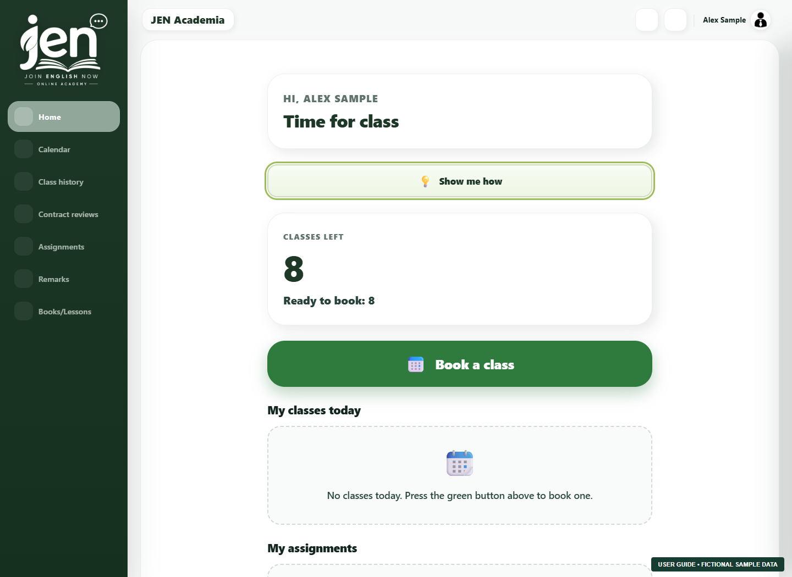
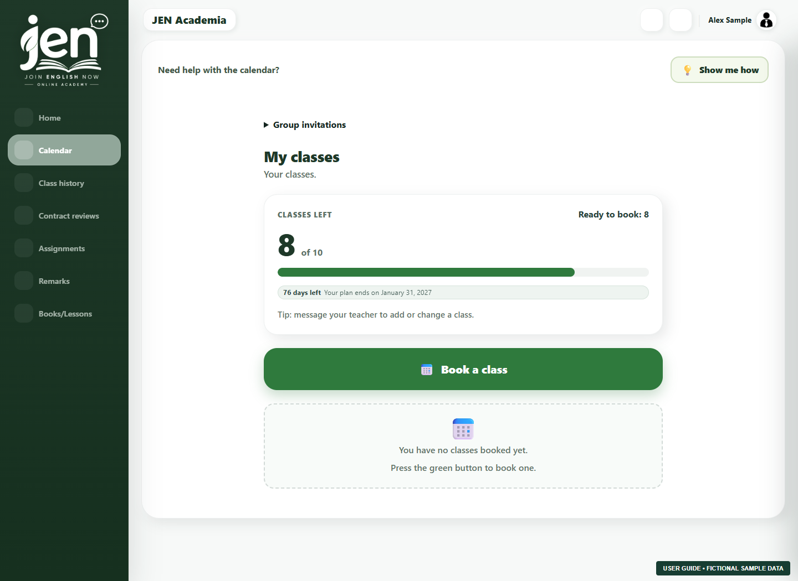
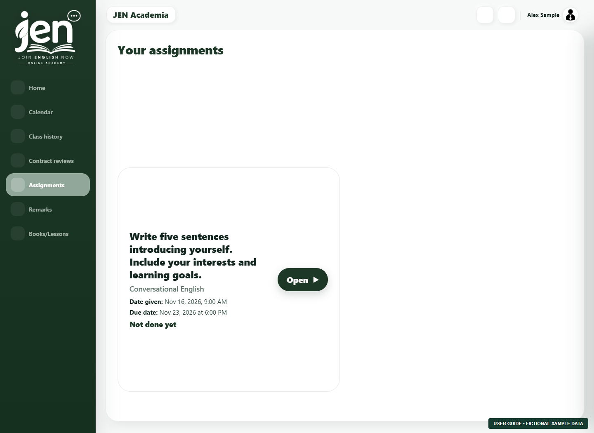

Download the printable PDF · All role manuals
Student
User Manual
Clear instructions for every stage.
Prepare. Follow the steps. Check the result.
Start here
Use JEN Academia to book and attend your lessons, submit work and follow your learning progress.
This manual is for student. Read Getting access first, then use the contents to find the task you want to complete. Each task gives preparation, numbered actions and a result to check. Bold words identify on-screen labels or important fields.
Use a current desktop or mobile browser, a reliable internet connection and access to your registered email. For online lessons, use a microphone, speakers or headphones, and a camera when needed. Allow meeting pop-ups and grant microphone/camera access when your browser asks.
| Where to go | What you do there |
|---|---|
| Home | Today’s classes, classes left, assignments and recent remarks. |
| Calendar | Bookings, class entry, requests and contracts. |
| Assignments / Remarks | Submit homework and read teacher guidance. |
| Books/Lessons / Class history | Study materials, progress and previous lessons. |
| Contract reviews / Account | Closing reviews, profile and LINE connection. |
Edition 2.0 • 16 November 2026. This guide follows the current project interface. School-specific availability, prices, contact details and enabled integrations may vary. Pictures are locally rendered interface examples with fictional data; workflow diagrams explain sequences rather than reproduce screens.
Getting access and signing in
Activate your account, enter the correct workspace, and recover access when needed.

Activate your invitation
Before you begin: An administrator has created your student or teacher account and sent a setup invitation.
- Open the newest account setup email. Check Junk or Spam if it is missing. Verify that it came from the school before opening the link.
- Open the setup link. Enter your initial password and confirmation as requested. Use at least eight characters and choose a password you do not use elsewhere.
- Submit the setup form and return to the sign-in page. Keep the password private; the invitation is single use.
Check your result: You can sign in with the invited email and your new password.
If you need help: Invitations normally expire after 24 hours. Ask an administrator for a new invitation if the page says the link is expired, invalid or already used. Always use the newest email.
Sign in
Before you begin: Have your registered email and password ready.
- Open the school website and choose the sign-in option.
- Type the full registered email address and password. Use the eye control if you need to check the password, and hide it again afterward.
- Select Stay signed in only on a device you control. Submit the sign-in form once and wait for the response.
- Confirm you reached your student Home page. If Account setup or a required review appears, complete it before continuing.
Check your result: Your role-specific navigation is visible.
If you need help: Repeated failed passwords can temporarily lock the account; the default is five failures followed by a 15-minute lock. Wait or use password recovery. A new successful login can end an earlier session on another device.
My Account and password recovery
Keep your profile and timezone correct before you schedule or attend lessons.
Complete or update your profile
Before you begin: Sign in and open Account from your account menu. First-time users may be sent here automatically.
- Review your name, country, birthday and timezone. Enter the required personal details shown by the setup steps.
- Choose the timezone where you will attend or teach. Compare it with a known local time before saving.
- If you want a profile photo, choose an image or use the camera where supported. Crop, reposition and zoom, then preview the result.
- Save the changes. Enter your current password if sensitive changes require confirmation.
- Reopen Account and check that the changes were saved. Complete the LINE connection in the next chapter to finish student onboarding.
Check your result: Your saved profile is visible, and required setup no longer blocks navigation.
If you need help: Email and existing phone information are read-only here. Ask an administrator to correct your email. Photo sources may be JPG/JPEG, PNG, WebP or GIF, up to 10 MiB before processing; the processed server upload is limited to 2 MiB.
Change a known password
Before you begin: You know your current password.
- Open the password-change section in Account. Enter the current password.
- Enter a new password of at least eight characters and repeat it in the confirmation field. Keep it within the form limit; the server maximum is 72 UTF-8 bytes.
- Save and wait for confirmation. If the current password is rejected, correct that field and try again.
Check your result: The password change succeeds. Use the new password next time you sign in.
Recover a forgotten password
Before you begin: You can receive mail at the registered email address.
- From sign-in, open Forgot password. Enter your email and send the request.
- Check your inbox and spam folder. The on-screen response stays general even if an address is unknown.
- Open the newest reset email within one hour. Enter and confirm a new password, submit, then sign in again.
Check your result: The new password works.
If you need help: Reset links are single use and newer requests invalidate older unused links. If no email arrives, ask the school to confirm your account email and mail delivery.
Connect LINE and finish onboarding
Students complete LINE linking before normal access. Connecting identifies your account; reminders can be paused separately.
Link your LINE account
Before you begin: Have LINE available and open Account in JEN Academia.
- Find the LINE connection card. Open the school’s official LINE account/add-friend link and add that account if needed.
- Generate a six-digit linking code in JEN Academia. Keep the code private.
- Switch to the official school LINE chat and send the code as instructed within ten minutes.
- Return to JEN Academia and use the completion/status check. Confirm that the connection is shown as linked, then continue to Home.
Check your result: Account shows a successful LINE link and normal student navigation becomes available.
If you need help: If the code expired, generate a new one and send it to the official school account. If status does not update, check that you used the same LINE account and the latest code; ask the school to check its LINE service configuration.
Pause, resume or reconnect
Before you begin: Open the LINE connection card in Account.
- Use the reminders control to pause or resume messages. Pausing keeps the identity link.
- If you intentionally disconnect, read the confirmation and complete it. Use the connection process again when you want to reconnect.
- Check the final connection and reminder states before leaving Account.
Check your result: The card shows the reminder and connection settings you selected.
Home and your class balance
Start your day by checking what is booked and what you can still reserve.

Check today’s work
Before you begin: Finish profile and LINE setup first.
- Open Home and read Classes left and Ready to book.
- Open a card in My classes today to see the class details. Confirm its date/time before opening the meeting.
- Open outstanding assignments and recent remarks. Use the First Steps guide if you need help with navigation.
Check your result: You know your next class and any outstanding learning tasks.
| Example balance | How to interpret it |
|---|---|
| 10 total − 2 used = 8 left | Eight classes remain unused in the package. |
| 8 left − 2 unresolved bookings = 6 ready to book | Two are already reserved. Only six more can be reserved in this example. |
Book a class
Book against your active contract, assigned teacher and package lesson duration.

Choose and confirm a lesson
Before you begin: Your contract is active, unexpired and has bookable classes. Your assigned teacher has published usable availability.
- From Home choose Book a class, or open Calendar and start its booking guide.
- Check the teacher, course, 25- or 50-minute duration and displayed timezone. Choose a day with usable free time.
- Select an offered time. For a weekly pattern, choose the offered weekdays/preferences and inspect the suggested occurrences.
- Review every selected date and time. Remove unwanted occurrences and stay within the ready-to-book allowance.
- Use the final booking action and wait for the result. Check each occurrence’s response if you requested more than one.
- Reopen the date in Calendar and confirm that the successful class cards appear with the correct teacher and time.
Check your result: Each successful booking appears in your schedule and reduces the allowance ready to book.
If you need help: Published working hours do not guarantee a free slot. Breaks, existing classes, reserved proposals, expiry and conflicts can remove times. If no slots appear, try another offered day or contact your teacher.
Join and attend a lesson
Open the scheduled class and confirm your own attendance and consent.
Enter the online classroom
Before you begin: Use a working microphone and stable connection. Check the lesson date/time and your Account timezone.
- Open the class from Home or Calendar. Check the teacher, course, date/time and duration.
- Use the class entry/meeting control. Read and acknowledge the attendance and consent prompts shown.
- Allow the meeting tab/pop-up and browser permissions. Confirm you have recorded your attendance in JEN Academia as well as opened the meeting.
- If the teacher has not arrived, wait and contact the teacher through chat if needed. Follow school instructions for connection problems.
- Attend the lesson. If disconnected, reopen the class and rejoin while the teacher’s session is still active.
- After the teacher ends the class, check its later outcome in Class history. Ask the school if your attendance needs investigation.
Check your result: Your attendance is recorded and you enter the correct meeting. Completion is handled by the teacher/administrator.
If you need help: If an unstarted lesson has passed its scheduled end, entry closes. After the teacher starts, rejoining remains possible until the teacher ends it. Closed or finalized classes reject entry.
Reschedule requests
A request proposes a change. The original class stays scheduled until the other participant approves.
Ask for a different time
Before you begin: The lesson is eligible, has not started, and neither participant has recorded attendance.
- Open Calendar, choose the class and open its reschedule action.
- Check the original date/time and timezone. Pick a future replacement slot offered by the availability picker.
- Enter a useful reason, such as a school or work conflict. Check that the entire lesson fits before the original contract expires.
- Review the proposal and submit it. Open the request list or related notification to track its status.
Check your result: The request is Pending. Keep the original appointment until approval is confirmed.
If you need help: The time may become unavailable before approval. Ask for another offered slot if the system reports a conflict or an expired contract.
Respond to an incoming request
Before you begin: The other participant sent the request.
- Open the request from Calendar, the request list or its notification. Read the original schedule, proposed schedule and reason.
- Choose the approval action if you can attend. If you cannot, choose decline and provide a meaningful reason; the decline flow requires 5–500 characters.
- Wait for confirmation and reopen Calendar. Check the final class date/time and request outcome.
Check your result: An approved request moves the lesson. A declined request leaves the original lesson in place.
Withdraw your own pending request
Before you begin: You created the request and it is still Pending.
- Open your submitted requests and select the correct lesson.
- Use the cancel/withdraw action and confirm. Check that the request is cancelled and the original lesson remains.
Check your result: The other participant no longer needs to decide your withdrawn request.
Group lesson invitations
A teacher may propose combining two compatible booked lessons into one shared session.
Respond to your invitation
Before you begin: Open the group invitation from the class/notification controls.
- Read the original lesson, proposed group time, teacher, course, duration and response deadline.
- Choose accept only if you can attend the proposed group session. Choose decline if it does not suit you.
- Check your recorded response. Wait for the second student’s response and the final confirmation.
- Open Calendar again. Attend the shared time only after the proposal is confirmed; otherwise keep the original booking.
Check your result: Your response is saved. Conversion occurs only after both students accept and final eligibility checks pass.
If you need help: A proposal expires at the earlier of 24 hours after creation or 15 minutes before the earliest original/proposed lesson. Decline, expiry or failed checks preserve the original bookings.
Complete and submit assignments
Read the instructions and deadline before using a submission attempt.

Submit your work
Before you begin: Open Assignments and select Open on the correct assignment.
- Read all instructions, the deadline and the attempts allowed/used. Open the teacher’s attachments if provided.
- Prepare your written response, files or both. An empty answer with no file cannot be submitted.
- Enter the answer and attach the intended files. Check filenames and remove anything attached by mistake.
- Submit and read the confirmation, especially if this is another attempt. Confirm once and wait for completion.
- Reopen the current submission. Check the saved answer, attachments, timestamp and attempt count.
Check your result: The assignment displays your saved submission and its submission status.
If you need help: Past-due or archived work cannot be submitted or edited. If attempts are exhausted, contact your teacher; repeated submission does not bypass the limit.
| Upload | Limit / accepted files |
|---|---|
| Assignment or submission | Up to 5 files; 10 MiB each; 25 MiB combined. |
| Documents | PDF, DOC/DOCX, XLS/XLSX, PPT/PPTX, TXT and RTF. |
| Images and media | JPG/JPEG/PNG; MP3/WAV/M4A; MP4/WebM/MOV. |
Study books and read teacher remarks
Use lesson materials in order and turn teacher guidance into your next learning action.
Read and complete a lesson
Before you begin: Open Books/Lessons. Access depends on your assigned teacher, course and distributed materials.
- Search for or select the book. Read its description and open its lesson list.
- Choose the first unlocked lesson. Read the notes and open the supported file/fullscreen reader.
- Work through the material to the end in the full reader. If a preview is limited, switch to the full reading view.
- When offered, choose Mark as Complete. Return to the lesson list and check the completion indicator.
- Continue to the next unlocked lesson. Return later to resume saved reading position or revisit completed materials.
Check your result: The lesson shows completed progress. Completing all lessons marks the book Completed.
If you need help: If a book disappears, ask the teacher/administrator to check course assignment, teacher distribution and archive status. A format your browser cannot preview may use the offered open-file fallback.
Read and use your teacher’s remarks
Before you begin: Open Remarks or a teacher-note notification.
- Check the teacher identity and related class/date so you know which lesson the note concerns.
- Read the strength and suggested next step. Make a short practice plan before your next lesson.
- Ask your teacher through chat if a comment needs explanation. You can read remarks; changes are made by the teacher.
Check your result: You understand what to practice next.
Contracts, renewals and extensions
Check whether you need a new package or more time to use an ended package.
| Your situation | Appropriate next step |
|---|---|
| You want a new package | Submit a new-contract request. |
| Your latest contract ended and unused classes remain | Request an extension of that existing contract. |
| The contract is still active or all classes are used | An extension is not available under the current rules. |
Request a new contract
Before you begin: Open the contract area in Calendar and review your latest package.
- Choose the new-contract request action. Select the course, class count and lesson duration offered by the form.
- Enter learning goals, preferences, optional schedule and notes. If matching preview is available, read it as advice; it does not assign a teacher.
- Review the request, submit and check that it shows Pending.
- To change a pending request of the same kind, reopen it and submit the revision. Use withdraw if you no longer want it.
- After the administrator decides, read the response and confirm the new package details before booking.
Check your result: Your request and its latest status are visible. Approval is required before a new package becomes available.
Request an extension
Before you begin: The latest ended/expired contract still has unused classes.
- Open that contract and choose its extension request. Explain why more time is needed and complete the offered fields.
- Submit and check the Pending status. If a different kind of request is already pending, withdraw it before switching request kinds.
- After approval, check the extended end date and retained balance, then book within the updated term.
Check your result: An approved extension keeps the same package and usage while changing its end date.
Class history and learning records
Find previous lessons, outcomes and available recordings.
Find a past lesson
Before you begin: Open Class history.
- Filter by teacher, outcome and time period: This week, This month or Earlier.
- Read the lesson card: participant, class date/time, duration and outcome. Use Show more to reveal older records.
- Open the available summary or protected recording action. If prompted, remain signed in to authorize access.
Check your result: You find the correct historical class and can review the information still available.
If you need help: A recording is available only while retained and accessible. Local retention normally lasts seven days. If a protected link has expired, reopen the class to request a fresh link; contact the school if the recording is no longer retained.
| Record | Meaning |
|---|---|
| Scheduled | A lesson exists in the timetable; this alone does not mean it was attended or completed. |
| Completed / Verified | The completion and evidence process has been resolved successfully. |
| Admin Review | An attendance/evidence exception needs an administrator’s decision. |
| Incomplete | The verification was resolved as incomplete. Contact the school if you dispute the outcome. |
| No-show | The teacher recorded that a student never confirmed attendance, after the scheduled lesson end. |
Submit your closing contract review
A completed, fully used contract may require a private teacher review before you can continue.
Rate your completed learning experience
Before you begin: Open Contract reviews and select a pending completed contract.
- Check the teacher and contract so you review the correct experience.
- Score all five items from 1 to 5: Clear explanations; Patient & supportive; Engaging classes; Helpful feedback; Professional & prepared.
- Add optional comments about your experience, up to 4,000 characters. Avoid including unrelated personal information.
- Review all answers carefully and submit. This is one submission per contract.
- Check that your side shows submitted. Return to Home when required review gating is cleared.
Check your result: Your review is recorded; its overall rating is the average of your five scores.
Notifications, messages and safe sign-out
Use notifications for task updates and chat for direct communication.
Read and act on notifications
Before you begin: You are signed in.
- Open the notification bell. Check unread items first or use filters such as New times, Homework, Teacher notes, News and Reminders.
- Open an item to see its related class, assignment, book or request. Check the date, timezone and people before acting.
- Use the available read controls to mark an item or all items read. Remove items you no longer need; use clear-all only after checking the list.
Check your result: The relevant page opens and unread indicators update.
If you need help: A removed notification does not undo the class, submission or decision it describes. If an old availability link no longer opens, check Calendar for current availability.
Send a direct message
Before you begin: Choose an appropriate school contact.
- Open the chat launcher and search the contact list. Students normally see their assigned teacher and active administrators.
- Select the intended contact. Check the name before typing a clear message about the class or support issue.
- Send the message once. Check that it appears in the conversation. Read receipts and presence indicators provide additional context when available.
- Use Load older when you need earlier messages. Minimize a conversation to keep working, then restore it from its minimized control.
Check your result: Your message appears in the correct conversation.
If you need help: On phones, one conversation window is shown at a time. If sending fails, check your connection and account/profile status, then reopen the conversation before retrying.
Finish your session
Before you begin: Save drafts and confirm any submitted changes first.
- Close meeting tabs when lessons have ended. Open the account menu and choose the sign-out option.
- Confirm the sign-in page appears. On a shared device, close the browser after signing out.
Check your result: Protected pages require sign-in again.
Troubleshooting and support
Use the symptom to choose a next action. Preserve the exact message when reporting an issue.
| Problem | What to do |
|---|---|
| Cannot sign in | Check your full email, password and keyboard settings. Wait if temporarily locked; use password recovery. Ask the school about archived accounts. |
| Setup or reset link fails | Open the newest email. Ask for a fresh setup invitation or request a fresh password reset; older links may have expired or been replaced. |
| Sent back to Account or Contract reviews | Complete the required profile, LINE onboarding or closing review before continuing. |
| Times look wrong | Compare the timezone in Account and the timezone shown in the class details. Correct the profile timezone and reopen Calendar. |
| A page or upload does not finish | Check connectivity, file format and file size. Confirm whether the action succeeded before retrying. Reopen a stale protected file link from its source page. |
| Cannot book although classes remain | Check Ready to book, reservations, expiry and usable teacher slots. Ask support to resolve old unsettled bookings. |
| Cannot reschedule | Check whether either participant has attended, whether the lesson is linked to a group, and whether the new time fits the original contract. |
| Homework submission is blocked | Check deadline, archive state, attempts left and upload limits. Ask the teacher about the assignment before retrying. |
Report a problem clearly
Before you begin: Use school contact information from the website or an available administrator chat.
- Record the affected page, the action you tried, the exact error message, and your local date/time and timezone.
- Include the class, assignment, contract or book identifier/name when available. State the expected result and what actually happened.
- Attach a screenshot with passwords, private messages, invitation/reset links and other people’s personal information hidden.
- Ask the school to confirm the record before you repeat an approval, booking, submission or other change.
Check your result: Support has enough information to locate the issue without receiving your credentials.
Useful terms: A contract/package is an allowance of classes with a duration and expiry. A reservation holds a class allowance for an unresolved booking. An archive hides or disables a record while preserving its data. A review is a closing evaluation, separate from per-class remarks.